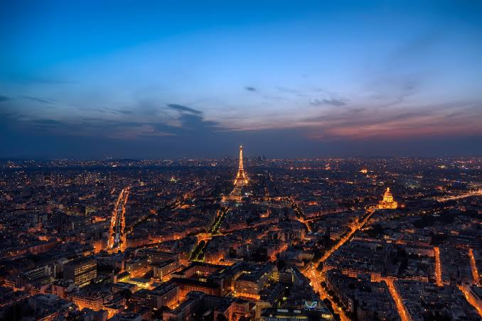

Визначні пам'ятки 🗼

Париж вражає своєю величністю: від величної Ейфелевої вежі та культового музею Лувр до затишних брукованих вуличок Латинського кварталу.
Кухня та гастрономія 🥐
Французькі хрусткі круасани з ароматною кавою на вуличній террасі, свіжі багети, різноманіття місцевих сирів та класичний цибулевий суп роблять кожен день у Парижі справжнім святом для гурманів.
Культура та традиції 🎨
Неквапливі прогулянки вздовж набережної Сени, відвідування картинних галерей та вечірні виступи вуличних музикантів створюють неповторну атмосферу свободи та мистецтва.
Особисті враження ✨
Найбільше запам'яталося відчуття повного спокою, коли ввечері ми сиділи в парку Тюїльрі, обговорювали плани на майбутнє та спостерігали за тим, як місто повільно запалює свої вечірні вогні.